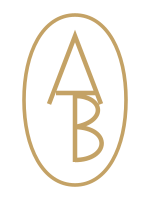
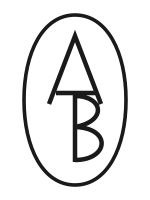
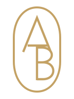
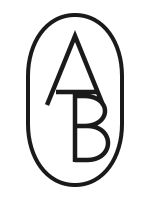
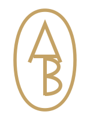
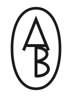

Refined
The same signature, with sharper joins and slightly stronger inner strokes.

24px
36px
40px

INK / LIGHT SURFACEFour close variations on the existing mark. Straighter terminals, cleaner intersections and flat gold, compared at actual navigation sizes.
The same signature, with sharper joins and slightly stronger inner strokes.


INK / LIGHT SURFACEA straighter oval and more geometric bowls. Precise and composed.


INK / LIGHT SURFACEFine horizontal terminals echo the site's editorial typography.
Stronger optical weight for the header, favicon and small applications.


INK / LIGHT SURFACE